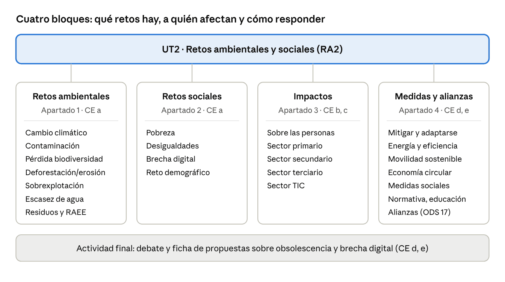
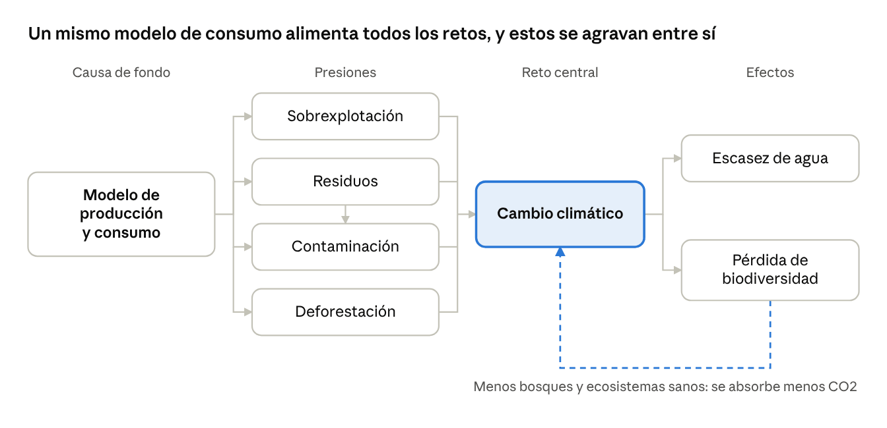
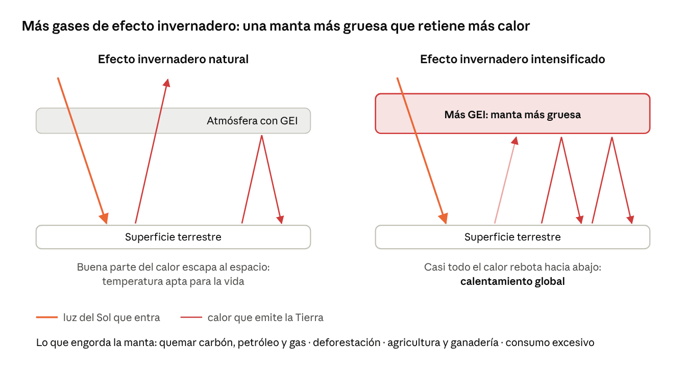
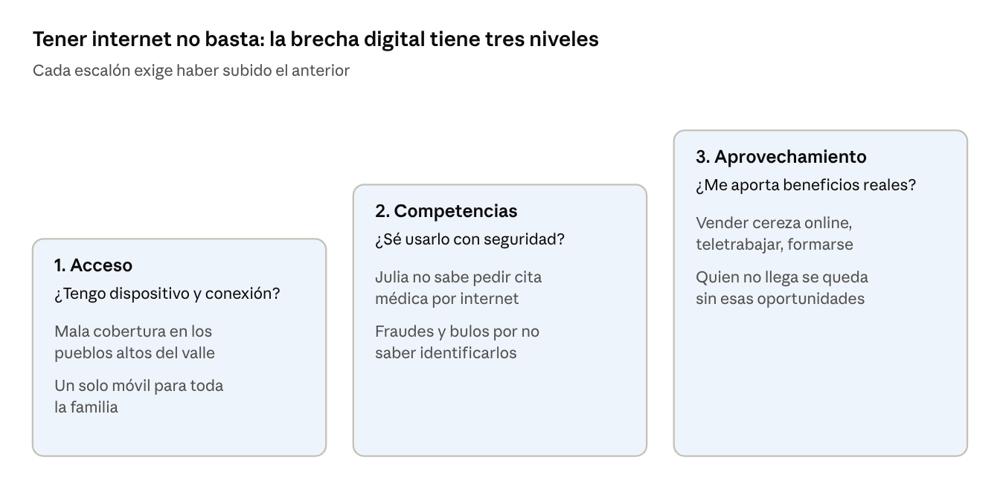
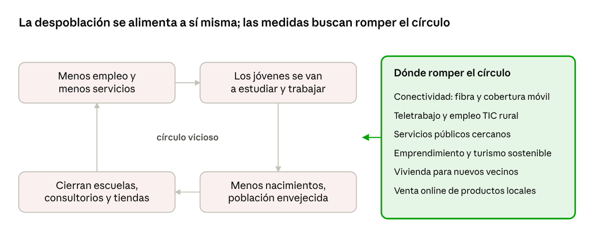
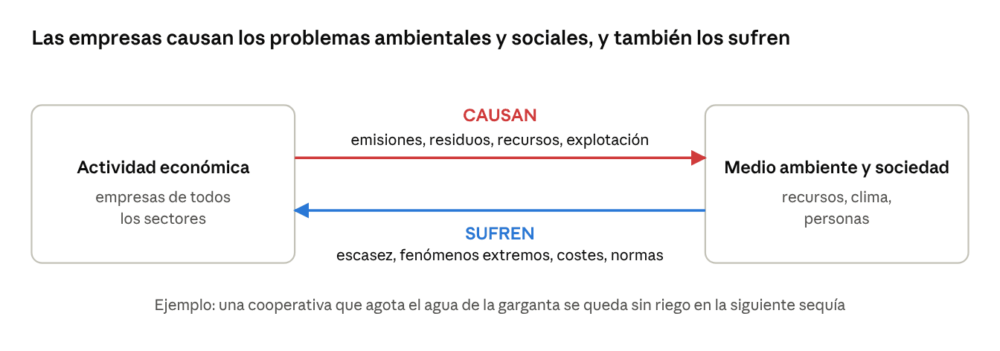
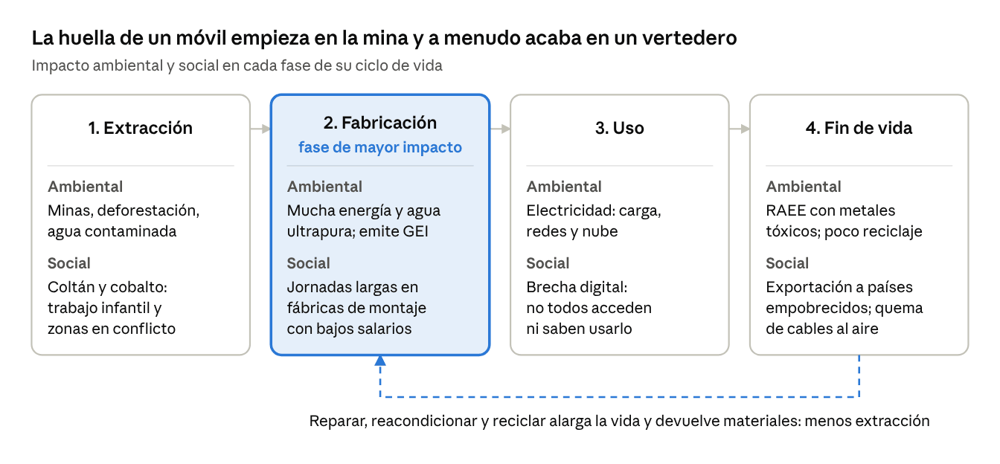
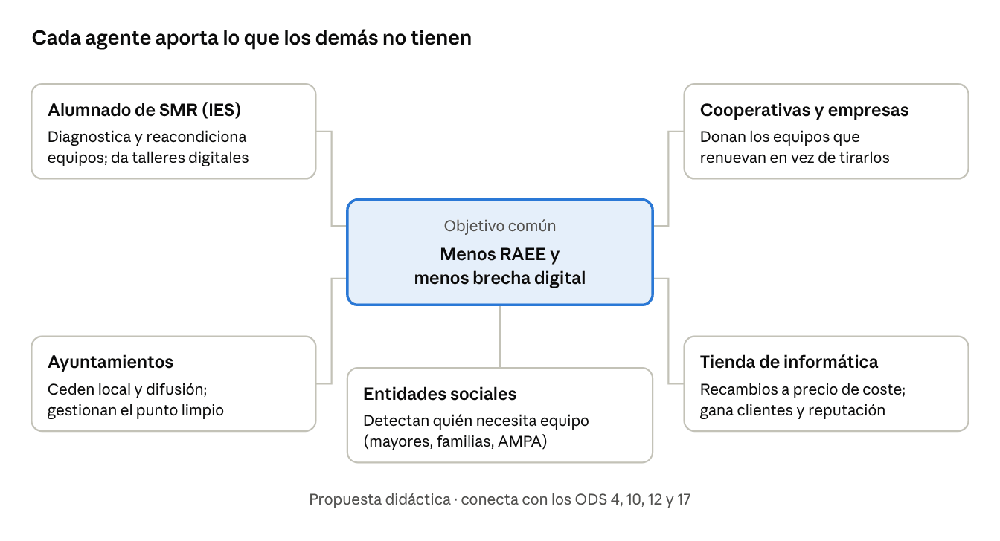

Inicio / Sostenibilidad aplicada al sistema productivo / Tema 2
Material didáctico · Tema 2UT2. Retos ambientales y sociales
Esta unidad enseña a reconocer los grandes problemas ambientales y sociales de nuestro tiempo, a ver cómo afectan a las personas y a las empresas (también a las del sector TIC y a las del Valle del Jerte) y a proponer soluciones realistas.
Descargar la presentación (PowerPoint, 330 KB)
0. Presentación de la unidad
Sesión teórica T1 (55 min): apartados 0 y 1. Empieza con la Actividad 0 (5 min) y sigue con la explicación.
Resultado de aprendizaje 2. Caracteriza los retos ambientales y sociales a los que se enfrenta la sociedad, describiendo los impactos sobre las personas y los sectores productivos y proponiendo acciones para minimizarlos.
| CE | Qué tendrás que saber hacer | Teoría | Práctica | Cómo se evalúa |
|---|---|---|---|---|
| a | Identificar los principales retos ambientales y sociales | T1, T2 | P1, P2 | Prueba escrita |
| b | Relacionar esos retos con la actividad económica | T2 | P2 | Prueba escrita |
| c | Analizar sus efectos sobre las personas y los sectores productivos | T2 | P2 | Prueba escrita |
| d | Identificar medidas para minimizar los impactos | T3 | P3 | Caso práctico |
| e | Valorar las alianzas y el trabajo coordinado entre agentes | T3 | P3 | Caso práctico |
La unidad alterna una hora de teoría y una hora de práctica. En las sesiones teóricas (T1 a T3) se explica el contenido de los apartados 0 a 4, con solo alguna pregunta flash de 2 minutos para comprobar que se sigue la explicación. Todas las actividades se hacen en las sesiones prácticas (P1 a P3, apartado 5), y la última es el caso práctico del RA2.
Organización de las sesiones
| Sesión | Tipo | Qué se hace | Producto |
|---|---|---|---|
| T1 | Teoría | Apartado 0 (presentación y situación de partida) y apartado 1 (retos ambientales) | — |
| P1 | Práctica | Taller de huella digital y diagnóstico de obsolescencia en los equipos del aula | Ficha de diagnóstico (actividad de clase) |
| T2 | Teoría | Apartado 2 (retos sociales) y apartado 3 (impactos) | — |
| P2 | Práctica | Brecha digital en la comarca y análisis de una empresa; sorteo de mociones | Informe por parejas (actividad de clase) |
| T3 | Teoría | Apartado 4 (medidas y alianzas) | Comprobación final de 5 minutos |
| P3 | Práctica | Debate argumentado y ficha de propuestas | Ficha de propuestas (caso práctico, CE d y e) |
Mapa de la unidad

Situación de partida: un día cualquiera de Nerea
Nerea terminó el ciclo de SMR hace un año y trabaja en una tienda-taller de informática de Cabezuela del Valle. Esta mañana, la cooperativa de cereza de un pueblo cercano le ha pedido presupuesto para cambiar sus 15 ordenadores de oficina. Funcionan bien, pero tienen seis años y Windows 10 dejó de recibir actualizaciones de seguridad en octubre de 2025.
A mediodía atiende a Julia, una vecina de 78 años que vive sola en un pueblo de la parte alta del valle. Julia no sabe pedir cita médica por internet, en su casa la cobertura móvil es mala y la sucursal del banco cerró hace tres años.
Por la tarde, Nerea mira el móvil (que tiene solo dos años, pero ya piensa en cambiar) y ve dos noticias: una granizada ha estropeado parte de la cosecha de cereza y un incendio forestal ha quemado cientos de hectáreas en el norte de Cáceres. Nerea piensa que son problemas muy graves, pero que ella, como técnica informática, no puede hacer nada.
Actividad 0. ¿Qué sabemos ya? (5 minutos, por parejas, al empezar T1)
Responded brevemente. Guardad las respuestas: las retomaremos al empezar la práctica P1 y al final de la unidad.
- ¿Qué problemas ambientales aparecen en la historia de Nerea? ¿Y qué problemas sociales?
- ¿Es necesario cambiar los 15 ordenadores de la cooperativa? ¿Qué otras opciones se te ocurren?
- ¿Por qué Julia tiene más dificultades que un joven de ciudad para hacer los mismos trámites?
- ¿Crees que Nerea tiene razón cuando piensa que no puede hacer nada? Justifica tu respuesta.
1. Retos ambientales
Un reto ambiental es un problema del medio natural que pone en riesgo la vida, la salud o la economía y que exige una respuesta colectiva. Hoy la comunidad científica señala siete grandes retos, y casi todos tienen el mismo origen: nuestro modelo de producción y consumo.
La idea clave es que están conectados. Los residuos contaminan; la contaminación y la deforestación agravan el cambio climático; el cambio climático provoca sequías y pérdida de especies. Por eso no se pueden resolver de uno en uno.

1.1. El cambio climático
El cambio climático es la alteración a largo plazo de los patrones del clima de la Tierra: temperaturas, lluvias, vientos. El clima siempre ha cambiado por causas naturales, pero el cambio actual tiene dos rasgos que lo hacen especialmente grave:
- Es antropogénico: lo causa la actividad humana.
- Es muy rápido: el planeta se calienta más deprisa que en ningún otro momento conocido, y ni la naturaleza ni las personas tienen tiempo de adaptarse.
El organismo de referencia es el IPCC (Grupo Intergubernamental de Expertos sobre el Cambio Climático), de Naciones Unidas, que reúne y evalúa el conocimiento científico sobre el clima.
Cómo funciona: el efecto invernadero
Algunos gases de la atmósfera (dióxido de carbono, metano, vapor de agua) retienen parte del calor del Sol, como una manta. Sin ellos la Tierra estaría helada. El problema es que la actividad humana ha añadido muchísimos más gases de efecto invernadero (GEI), sobre todo CO2 procedente de quemar carbón, petróleo y gas. La manta es cada vez más gruesa y el planeta se calienta.

Quién emite: actividades responsables
| Actividad | Por qué emite GEI | Ejemplo en el sector TIC |
|---|---|---|
| Producción de electricidad | Buena parte se sigue generando quemando carbón o gas | Centros de datos, servidores y equipos encendidos 24 h |
| Industria y minería | Usan combustibles fósiles y materiales derivados del petróleo (plásticos) | Extracción de metales y fabricación de chips, pantallas y baterías |
| Transporte | Casi todos los vehículos funcionan con derivados del petróleo | Envío de componentes desde Asia y paquetes de comercio electrónico |
| Deforestación | Los árboles talados liberan el carbono que almacenaban | Minas a cielo abierto en zonas de selva |
| Producción de alimentos | Fertilizantes, ganado, energía y envases | (indirecto) |
| Consumo excesivo | Cada producto que compramos de más ha emitido GEI al fabricarse y transportarse | Cambiar de móvil cada dos años |
Consecuencias
Aumento de temperaturas y olas de calor, sequías, incendios forestales, lluvias torrenciales e inundaciones (como las DANA), deshielo de glaciares y subida del nivel del mar, desaparición de especies, riesgos para la salud y desplazamientos de población.
En el Valle del Jerte. El cerezo necesita un número mínimo de horas de frío en invierno para florecer bien. Los inviernos más suaves, las heladas tardías y las tormentas de granizo o lluvia en plena recogida (que rajan la fruta) ponen en riesgo la principal fuente de ingresos de la comarca.
Pregunta flash (2 min). Piensa en lo que has hecho desde que te levantaste: ¿qué acción tuya ha emitido gases de efecto invernadero sin que lo notaras? (La huella digital se trabaja en la práctica P1.)
1.2. Contaminación
La contaminación es la introducción en el medio de sustancias o energías (químicas, físicas o biológicas) que dañan el aire, el agua, el suelo o los seres vivos. Casi siempre tiene origen humano: industria, minería, transporte, agricultura intensiva.
| Tipo | Qué es | Ejemplo relacionado con la informática |
|---|---|---|
| Atmosférica | Sustancias perjudiciales en el aire en cantidades excesivas | Quema de cables a cielo abierto para recuperar cobre en vertederos de residuos electrónicos |
| Del agua | Contaminantes en ríos, mares y acuíferos | Vertidos de la fabricación de semiconductores; lixiviados de vertederos |
| Del suelo | Sustancias tóxicas que degradan la tierra | Plomo, mercurio y cadmio de aparatos desechados sin control |
| Acústica | Exceso de ruido perjudicial para la salud | Ventilación de grandes salas de servidores |
| Lumínica | Luz artificial excesiva o mal dirigida | Pantallas publicitarias LED encendidas toda la noche |
Sus efectos: enfermedades respiratorias, cardíacas y cáncer; deterioro de ecosistemas y pérdida de biodiversidad; y más cambio climático. Uno de los materiales más problemáticos es el plástico: tarda siglos en degradarse y se fragmenta en microplásticos (trozos de menos de 5 mm) que llegan a los peces y, a través de ellos, a nosotros.
1.3. Pérdida de biodiversidad
La biodiversidad es la variedad de vida del planeta: especies de plantas, animales y microorganismos, y los ecosistemas que forman. Es la base de los servicios ecosistémicos, lo que la naturaleza nos da gratis: alimentos, medicinas, madera, agua limpia o polinización de cultivos.
Las especies desaparecen hoy a un ritmo tan alto que muchos científicos hablan de una sexta extinción masiva, esta vez causada por el ser humano.
| Causas (casi todas humanas) | Consecuencias |
|---|---|
| Destrucción de hábitats para uso urbano, industrial o agrícola | Ecosistemas inestables: si cae una especie, caen otras o aparecen plagas |
| Contaminación | Menos servicios ecosistémicos (menos polinización, menos agua limpia) |
| Cambio climático, que obliga a las especies a migrar o adaptarse | Más cambio climático, porque los ecosistemas degradados absorben menos CO2 |
| Sobrexplotación: caza y pesca sin control | Más riesgo de enfermedades al romperse los equilibrios naturales |
| Especies exóticas invasoras | Pérdida de patrimonio natural y cultural |
En el Valle del Jerte. Las abejas y otros polinizadores son imprescindibles para que el cerezo dé fruto. Su declive afecta directamente a la cosecha. La Reserva Natural Garganta de los Infiernos protege parte de los ecosistemas del valle.
1.4. Deforestación y erosión del suelo
La deforestación es la desaparición de bosques por la agricultura, la minería, la urbanización, la tala incontrolada o los incendios. Sin la cubierta vegetal, la lluvia y el viento arrastran la capa fértil del suelo: es la erosión. Cuando el suelo pierde por completo su capacidad de retener agua y nutrientes en zonas secas, hablamos de desertificación.
La cadena es: deforestación → erosión → suelo degradado → desertificación. Y a la vez: menos bosque → más CO2 en la atmósfera → más cambio climático → más sequías e incendios → más deforestación.
En el norte de Cáceres. Los grandes incendios de los últimos años en la Sierra de Gata y Las Hurdes muestran este círculo: tras el fuego, las lluvias de otoño arrastran el suelo de las laderas quemadas.
1.5. Sobrexplotación de los recursos naturales
Hay sobrexplotación cuando extraemos agua, minerales, madera o peces más rápido de lo que la naturaleza puede regenerarlos. Un indicador muy visual es el Día de la Sobrecapacidad de la Tierra (Earth Overshoot Day): la fecha en que la humanidad ya ha consumido todo lo que el planeta puede regenerar en un año. Desde hace décadas cae hacia mitad de año, así que el resto del año vivimos «a crédito».
En el sector TIC. Un smartphone contiene decenas de elementos químicos distintos: cobre, oro, litio, cobalto, tántalo (del coltán), tierras raras… Muchos son escasos y su extracción tiene un alto coste ambiental y social.
1.6. Escasez de agua
Solo una pequeña parte del agua del planeta es dulce y aún menos es potable. Hay estrés hídrico cuando la demanda de agua supera a la disponible, o cuando el agua existente no se puede usar por su mala calidad. Lo agravan las sequías, la deforestación, la contaminación, el despilfarro y el reparto desigual entre territorios. Sus efectos: problemas de salud, menos alimentos, pérdida de biodiversidad y conflictos entre regiones.
Agua y tecnología. La fabricación de chips necesita enormes cantidades de agua ultrapura, y muchos centros de datos usan agua para refrigerar sus servidores.
1.7. Generación y gestión de residuos
Un residuo es cualquier material que se desecha porque ya no es útil para quien lo tiene. El modelo de «comprar, usar y tirar» genera muchísimos, sobre todo envases y plásticos. Durante décadas la respuesta fue el vertedero o la incineradora; hoy la ley (Ley 7/2022, de residuos y suelos contaminados para una economía circular) obliga a priorizar reducir, reutilizar y reciclar. Los residuos se clasifican según su origen (domésticos, comerciales, industriales, agrarios, de construcción) y su peligrosidad (peligrosos y no peligrosos).
Tres tipos de residuos destacan por su gravedad:
| Residuo | Por qué preocupa |
|---|---|
| Desperdicio de alimentos | Aproximadamente un tercio de la comida producida se tira, y eso supone en torno al 10 % de las emisiones de GEI |
| Plásticos | Tardan cientos de años en degradarse; en España solo se recicla aproximadamente un 30 % |
| Basura tecnológica (RAEE) | Decenas de millones de toneladas al año en el mundo; la mayoría no se recicla por canales oficiales y gran parte acaba en vertederos de países empobrecidos |
Obsolescencia: por qué tiramos aparatos que todavía sirven
La obsolescencia es el proceso por el que un producto deja de ser útil (o lo parece) antes de tiempo. Es una de las causas principales de la basura tecnológica y será el tema del debate final.
| Tipo de obsolescencia | Qué ocurre | Ejemplo TIC |
|---|---|---|
| Programada o técnica | El producto se diseña para fallar o degradarse pronto | Baterías que pierden capacidad rápidamente y no se pueden cambiar |
| De software o por incompatibilidad | El hardware funciona, pero deja de recibir actualizaciones o no es compatible | Equipos válidos que no cumplen los requisitos de Windows 11 |
| Por dificultad de reparación | Repararlo es imposible o más caro que comprar uno nuevo | Piezas pegadas, tornillos especiales, recambios que no se venden |
| Psicológica o percibida | El producto funciona, pero la publicidad y la moda nos hacen sentir que está anticuado | Cambiar de móvil cada año porque sale un modelo nuevo |
Pregunta flash (2 min). ¿Qué tipo de obsolescencia afecta a los 15 ordenadores de la cooperativa? ¿Y al móvil de Nerea? (En la práctica P1 diagnosticaremos equipos reales.)
2. Retos sociales
Sesión teórica T2 (55 min): apartados 2 y 3.
La sostenibilidad no consiste solo en cuidar el medio ambiente: también busca que todas las personas puedan vivir con dignidad. Los retos sociales, igual que los ambientales, están conectados entre sí y con ellos: la sequía empobrece, la pobreza obliga a emigrar, la despoblación deja el monte sin cuidar y aumenta el riesgo de incendio.
2.1. La pobreza
Se distinguen dos tipos:
| Tipo | Definición | Dónde se da |
|---|---|---|
| Pobreza absoluta o extrema | No tener cubiertas las necesidades básicas: alimento, agua potable, vivienda, salud. El Banco Mundial la sitúa por debajo de 2,15 $ al día | Sobre todo en África subsahariana y el sur de Asia; afecta aproximadamente al 10 % de la población mundial |
| Pobreza relativa | Estar en clara desventaja económica y social respecto a la gente de tu entorno | También en países ricos como España |
La pobreza tiene causas históricas (colonialismo, guerras), políticas (corrupción, inestabilidad) y económicas: reparto desigual de la riqueza, desempleo y empleo mal pagado, falta de acceso a educación y salud, efectos del cambio climático, y el intercambio desigual, por el que empresas de países ricos aprovechan recursos y mano de obra barata de países empobrecidos.
Sus consecuencias (hambre, enfermedad, abandono escolar, migraciones, exclusión) generan más pobreza: un niño que crece en un entorno desfavorecido tiene menos opciones de estudiar y más probabilidad de acabar en un empleo precario. Es la pobreza generacional.
La cara oculta de nuestros dispositivos. Parte del cobalto y del coltán de las baterías y los condensadores se extrae en minas de la República Democrática del Congo, a veces con trabajo infantil y en zonas de conflicto armado. Y muchos aparatos que desechamos en Europa acaban en vertederos de África occidental, donde personas sin protección queman cables para recuperar el cobre. El sector TIC tiene, por tanto, una responsabilidad social a lo largo de toda su cadena de suministro.
2.2. Las desigualdades
La desigualdad social es la diferencia injusta en el acceso a recursos, oportunidades y derechos. Cuando es grave conduce a la exclusión social: personas que quedan al margen del empleo, la educación y la vida de su comunidad.
| Tipo de desigualdad | En qué consiste | Cómo se ve en el sector TIC |
|---|---|---|
| Económica | Reparto desigual de ingresos y riqueza | Salarios muy distintos entre quien diseña un móvil y quien lo ensambla |
| De género | Menos oportunidades para las mujeres en empleo, salario, liderazgo y cuidados | Las mujeres siguen siendo minoría en los ciclos y empleos de informática |
| Étnica o racial | Discriminación por origen | Sesgos en algoritmos de selección de personal o de reconocimiento facial |
| Por discapacidad | Barreras para participar en igualdad | Webs y aplicaciones no accesibles |
| Generacional (edad) | Desventaja ligada a la edad | Personas mayores excluidas de trámites que solo se hacen online |
| Territorial | Desequilibrios entre territorios | Peor conectividad en el medio rural |
Algunas medidas de inclusión son el ingreso mínimo vital, la vivienda social, las becas, la atención a la diversidad, los incentivos para contratar a personas vulnerables y las campañas contra la discriminación. Los ODS más relacionados son el 1 (fin de la pobreza), el 4 (educación de calidad), el 5 (igualdad de género), el 8 (trabajo decente) y el 10 (reducción de las desigualdades).
2.3. La brecha digital
La brecha digital es la desigualdad entre quienes pueden acceder a las tecnologías digitales y aprovecharlas y quienes no. Hoy casi todo pasa por internet: pedir cita médica, solicitar una ayuda, buscar trabajo, hacer los deberes o vender la cosecha. Por eso quedarse fuera es una nueva forma de exclusión.
No basta con «tener internet»: la brecha tiene tres niveles.

Afecta más a unos grupos que a otros:
- Por edad: las personas mayores, como Julia en la situación de partida.
- Por territorio: los pueblos pequeños y las zonas de montaña, donde llega peor la fibra y la cobertura móvil.
- Por renta: familias que no pueden pagar un ordenador por hijo o una buena tarifa de datos.
- Por género y por discapacidad: menos presencia femenina en perfiles técnicos y aplicaciones no accesibles.
Brecha digital y obsolescencia están relacionadas. Muchos equipos que se tiran por obsolescencia todavía podrían reacondicionarse (limpieza, cambio de disco a SSD, sistema operativo ligero como una distribución Linux) y donarse a familias, asociaciones o centros que no pueden comprarlos. Es un terreno en el que un técnico de SMR puede actuar directamente.
Pregunta flash (2 min). ¿Conoces a alguien que necesite ayuda para hacer un trámite por internet? ¿En qué nivel de la brecha está? (La brecha en la comarca se trabaja en la práctica P2.)
2.4. El reto demográfico
Desde hace más de un siglo, la población española se desplaza del campo a las ciudades. Hoy conviven dos realidades: una España vaciada, que ocupa más de la mitad del territorio pero reúne menos del 18 % de la población, y una España saturada (grandes ciudades y costa) con problemas de ruido, contaminación y precio de la vivienda. Desde el año 2000, más del 60 % de los municipios ha perdido habitantes.
El reto demográfico reúne tres problemas:
- Despoblación: pérdida de habitantes en la mayoría de municipios.
- Envejecimiento: la proporción de mayores es más alta donde se han ido los jóvenes.
- Población flotante: personas que están temporalmente en un lugar sin residir en él (turistas, temporeros), con impacto en servicios, agua y residuos.
La despoblación funciona como un círculo vicioso: cada consecuencia empuja a más gente a marcharse.

En el Valle del Jerte. El valle combina los tres fenómenos: pueblos pequeños y envejecidos en la parte alta, una gran dependencia de un solo cultivo y miles de visitantes en primavera (Cerezo en Flor) y en la campaña de recogida, cuando también llegan temporeros. Una buena conectividad y empleos cualificados (teletrabajo, servicios informáticos, comercio electrónico de productos locales) son claves para que los jóvenes puedan quedarse.
El Ministerio para la Transición Ecológica y el Reto Demográfico tiene un plan con 130 medidas en 10 ejes. Uno de ellos es la transición digital y la plena conectividad, junto a otros como la transición ecológica, el turismo sostenible, el emprendimiento o los servicios públicos.
Pregunta flash (2 min). A mano alzada: ¿quién se ve trabajando desde el valle dentro de diez años? ¿Qué tendría que cambiar para que fuera posible?
3. Impacto de los retos en las personas y en los sectores productivos
La relación entre empresa y medio ambiente va en los dos sentidos: las actividades económicas causan los problemas ambientales y sociales y, a la vez, los sufren. Una empresa que contamina el río del que depende acabará sin agua para producir.

3.1. Efectos sobre las personas
Antes de ver los sectores, conviene recordar que detrás de cada impacto hay personas:
- Salud: enfermedades respiratorias por la contaminación, golpes de calor, enfermedades que se extienden con el calor (mosquitos, garrapatas).
- Empleo y renta: cosechas perdidas, cierres de empresas, subida de precios de alimentos y energía.
- Desplazamientos: personas que tienen que abandonar su tierra por sequías, inundaciones o conflictos por los recursos.
- Desigualdad: quienes menos han contribuido al problema (países y familias pobres) son quienes más lo sufren y menos medios tienen para adaptarse. Es la base de la idea de justicia climática.
3.2. Efectos en los sectores productivos
| Sector | Cómo le afectan los retos ambientales | Ejemplo cercano |
|---|---|---|
| Primario (agricultura, ganadería, pesca, silvicultura) | Es el más expuesto porque trabaja directamente con la naturaleza: cosechas peores por sequías, lluvias extremas o erosión; menos polinizadores; más plagas y enfermedades del ganado; menos peces; pérdida de bosques por incendios | Cereza del Jerte dañada por granizo, lluvias en la recogida o falta de horas de frío; la sequía disparó el precio del aceite de oliva |
| Secundario (industria y energía) | Menos materias primas y más caras por la sobrexplotación; escasez de agua en industrias que consumen mucha; más demanda de climatización; renovables afectadas por cambios en lluvia, nubes y viento | Escasez mundial de chips y subida del precio de componentes por falta de materias primas, sequías en zonas productoras o interrupciones logísticas |
| Terciario (comercio, transporte, turismo, servicios) | Problemas de suministro y precios más altos; transporte cortado por fenómenos extremos; destinos turísticos menos atractivos si se degrada el paisaje o hace un calor extremo | Turismo del Jerte ligado al paisaje del cerezo en flor y a las gargantas; las DANA cortan carreteras, vías y vuelos |
Además, todos los sectores comparten cinco efectos:
| Efecto común | Qué significa para la empresa |
|---|---|
| Cumplimiento de normas ambientales | Nuevas obligaciones legales (residuos, emisiones, información de sostenibilidad) y sanciones si no se cumplen |
| Aumento de costes | Energía, materias primas, seguros y adaptación de instalaciones más caros |
| Cambios en las preferencias de los clientes | Cada vez más consumidores eligen productos sostenibles y castigan las malas prácticas |
| Reputación y responsabilidad social corporativa | La imagen de la empresa depende de cómo trate al medio ambiente y a las personas |
| Innovación y oportunidades de negocio | Nacen nuevos mercados: renovables, reparación, reacondicionamiento, eficiencia energética |
3.3. El caso del sector TIC
Lo digital parece «inmaterial», pero tiene una huella física muy real. La mejor forma de verla es seguir la vida de un dispositivo, desde la mina hasta el vertedero.

- La mayor parte del impacto de un móvil o un portátil se produce al fabricarlo, no al usarlo. Por eso alargar su vida útil es la medida más eficaz.
- La nube también consume: los centros de datos necesitan electricidad para funcionar y para refrigerarse, y en algunos casos mucha agua.
- El sector TIC también es parte de la solución: sensores para regar solo lo necesario, teletrabajo que evita desplazamientos, plataformas para vender productos locales sin intermediarios, sistemas que gestionan la energía de un edificio.
Y a la vez el sector sufre los retos: subida del precio de componentes, cortes de suministro, olas de calor que ponen en riesgo la refrigeración de los servidores o normas nuevas sobre reparabilidad y residuos que obligan a cambiar productos y procesos.
Pregunta flash (2 min). Piensa en una empresa de tu pueblo: ¿qué problema ambiental causa y cuál sufre? (Se analiza a fondo en la práctica P2.)
4. Medidas para minimizar los impactos
Sesión teórica T3 (55 min): apartado 4. Termina con una comprobación de 5 minutos.
Frente a los retos hay respuestas, y funcionan mejor cuando actúan a la vez las personas, las empresas y las administraciones. En este apartado se recogen las principales, siempre con un ejemplo de qué puede hacer un profesional de SMR.
4.1. Mitigar y adaptarse
Contra el cambio climático se combinan dos estrategias complementarias:
| Estrategia | Objetivo | Ejemplos |
|---|---|---|
| Mitigación | Reducir las emisiones de GEI para frenar el cambio climático (actuar sobre las causas) | Energías renovables, eficiencia energética, alargar la vida de los equipos |
| Adaptación | Reducir los daños y aumentar la resiliencia (capacidad de resistir y recuperarse) ante un clima que ya ha cambiado (actuar sobre las consecuencias) | Redes antigranizo en los cerezos, infraestructuras resistentes a inundaciones, sistemas de alerta, refrigeración eficiente de servidores |
4.2. Transición energética
La transición energética es el cambio de un modelo basado en combustibles fósiles (carbón, petróleo, gas), que son finitos y emiten GEI, a otro basado en energías renovables, que se regeneran y apenas emiten.
| Energía renovable | De dónde sale |
|---|---|
| Eólica | Fuerza del viento, mediante aerogeneradores |
| Solar fotovoltaica | Luz del sol convertida en electricidad con paneles |
| Solar termoeléctrica | El sol calienta un fluido hasta producir vapor que mueve una turbina |
| Hidroeléctrica | Agua de ríos o embalses que mueve turbinas |
| Del mar | Mareas y olas |
| Biomasa | Materia orgánica: leña, restos agrícolas, residuos |
| Geotérmica | Calor interno de la Tierra |
Ventajas: no se agotan, contaminan poco, reducen la dependencia de importar combustibles, permiten el autoconsumo y crean empleo. Inconvenientes: dependen del tiempo (sol, viento), exigen una inversión inicial alta y sus instalaciones ocupan espacio y tienen impacto en el paisaje. En España, la Ley 7/2021 de Cambio Climático y Transición Energética fija el objetivo de alcanzar la neutralidad climática antes de 2050.
Neutralidad de carbono significa que lo que emitimos queda compensado por lo que se retira de la atmósfera (por ejemplo, con bosques). Se consigue en dos pasos: primero reducir al máximo, después compensar lo que no se pueda evitar.
4.3. Eficiencia energética
La eficiencia energética es hacer lo mismo gastando menos energía. Ahorra dinero y emisiones a la vez. En el trabajo de un técnico de SMR se traduce en:
- Configurar la suspensión y el apagado automático de equipos y monitores.
- Elegir equipos con buena etiqueta energética y fuentes de alimentación eficientes.
- Apagar o virtualizar servidores infrautilizados.
- Ajustar la climatización del cuarto de servidores y no enfriar de más.
- Usar iluminación LED, regletas con interruptor y aprovechar la luz natural.
4.4. Movilidad sostenible
Consiste en desplazar personas y mercancías de forma eficiente, accesible y segura con el menor impacto posible: caminar o ir en bici, usar el transporte público, compartir coche (carpooling) o vehículos de alquiler temporal (sharing), pasar al vehículo eléctrico y crear zonas de bajas emisiones en las ciudades. Las TIC ayudan con el teletrabajo y la asistencia remota: resolver una incidencia por escritorio remoto evita un desplazamiento.
4.5. Conservación de la biodiversidad
Incluye proteger hábitats (parques y reservas), restaurar ecosistemas dañados (reforestación, reintroducir especies), practicar una agricultura sostenible, luchar contra la caza furtiva y el tráfico de especies y controlar las especies invasoras.
4.6. Producción y consumo sostenibles
El modelo tradicional es lineal: extraer, fabricar, usar y tirar. La economía circular busca lo contrario: gastar menos materias primas, alargar la vida de los productos y aprovechar los residuos como recursos. (La estudiaremos a fondo en la UT4.)
| Quién | Qué puede hacer |
|---|---|
| Personas consumidoras | No comprar lo que no se necesita; elegir productos duraderos, reparables y de proximidad; reparar antes de sustituir; comprar reacondicionado; llevar los aparatos al punto limpio o devolverlos en la tienda |
| Empresas | Diseñar productos duraderos y reparables (ecodiseño); usar materiales reciclados y envases reutilizables; trabajar con proveedores locales; ofrecer reparación y recambios; recoger los equipos usados |
Medidas legales contra la obsolescencia en la UE:
- Cargador universal USB-C para móviles, tabletas y portátiles (Directiva (UE) 2022/2380).
- Derecho a reparar: obliga a los fabricantes a ofrecer reparación a precio razonable y facilitar piezas (Directiva (UE) 2024/1799).
- Ecodiseño y etiquetado de móviles y tabletas: desde junio de 2025 deben ofrecer baterías más duraderas, recambios durante años y mostrar en la etiqueta una clase de reparabilidad.
- Gestión de RAEE: en España, la tienda que vende un aparato nuevo debe recoger el viejo equivalente sin coste (Real Decreto 110/2015).
4.7. Medidas frente a los retos sociales
| Reto | Administraciones | Empresas | Ciudadanía y profesionales TIC |
|---|---|---|---|
| Pobreza y desigualdad | Ingreso mínimo vital, becas, vivienda social, cooperación internacional | Salarios dignos, revisar que sus proveedores respetan los derechos laborales, contratar a personas vulnerables | Consumo responsable y comercio justo, voluntariado |
| Brecha digital | Llevar fibra y cobertura a todo el territorio, puntos de acceso público, formación digital, mantener la atención presencial | Webs y apps accesibles, donar equipos reacondicionados, ayudar a clientes mayores | Enseñar a familiares y vecinos, reacondicionar equipos, voluntariado digital |
| Despoblación | Servicios públicos en los pueblos, conectividad, ayudas al emprendimiento rural | Teletrabajo, oficinas y empleo en zonas rurales, venta online de productos locales | Emprender o trabajar en remoto desde el pueblo |
4.8. Normativa, políticas y educación ambiental
Proteger el planeta no puede depender solo de la buena voluntad: los Estados aprueban leyes y planes de obligado cumplimiento. En España, el Ministerio para la Transición Ecológica y el Reto Demográfico dirige la política ambiental (por ejemplo, con el Plan Nacional de Adaptación al Cambio Climático), y las comunidades autónomas y los ayuntamientos aprueban sus propias normas.
La educación ambiental busca que la población entienda los problemas y cambie sus hábitos: asignaturas como esta, talleres, campañas en medios y redes, ferias y programas de las propias empresas.
Comprobación de T3: ¿mitigación o adaptación? (5 minutos, al final de la sesión)
Clasifica cada medida como mitigación o adaptación y justifica en una línea:
- Instalar placas solares en la nave de la cooperativa.
- Colocar redes antigranizo sobre los cerezos.
- Cambiar los 15 ordenadores de la cooperativa por SSD y más RAM en lugar de comprar equipos nuevos.
- Instalar un sistema de alerta por SMS ante riesgo de incendio forestal.
- Configurar la suspensión automática de todos los equipos de una oficina.
- Duplicar la refrigeración del cuarto de servidores ante las olas de calor.
4.9. Alianzas: nadie puede solo
Los retos ambientales y sociales son complejos y están conectados; ningún agente tiene todos los recursos ni todo el conocimiento para resolverlos. Por eso es necesario trabajar de forma transversal (implicando a varios sectores y áreas) y coordinada (con objetivos y reparto de tareas comunes). Es la idea del ODS 17: alianzas para lograr los objetivos.
Ventajas de las alianzas:
- Se comparten recursos, experiencia y conocimiento, lo que favorece la innovación.
- Es más fácil conseguir financiación, investigar juntos e intercambiar buenas prácticas.
- Se gana capacidad para influir en las decisiones y lograr cambios grandes.
Ejemplos. La iniciativa RE100, de la organización The Climate Group, reúne a grandes empresas (entre ellas tecnológicas como Google o Apple) que se comprometen a usar electricidad 100 % renovable. En nuestra comarca, el propio cooperativismo es una alianza: los productores se unen para comercializar la cereza, compartir instalaciones e invertir juntos.
Una alianza local contra la obsolescencia y la brecha digital podría funcionar así (es una propuesta, no un proyecto existente):

Pregunta flash (2 min). ¿Qué agentes de la comarca deberían colaborar para prevenir los incendios forestales? (Las alianzas se concretan en la ficha de propuestas de la práctica P3.)
5. Sesiones prácticas
Cada sesión práctica aplica lo explicado en la hora de teoría anterior y dura 55 minutos. Las dos primeras son actividades de clase y preparan la tercera, que es el caso práctico evaluable del RA2.
P1. Taller: huella digital y diagnóstico de obsolescencia (tras T1)
Objetivo: aplicar los retos ambientales (CE a) al propio entorno tecnológico. Organización: grupos de 3, cada grupo con un equipo del aula o un móvil de alguno de sus miembros.
| Tiempo | Parte | Qué se hace |
|---|---|---|
| 5 min | Arranque | Recuperar las respuestas de la Actividad 0 y comentar qué retos ambientales aparecen en la historia de Nerea |
| 15 min | A. Mi huella climática digital | Lluvia de ideas de hábitos que emiten GEI (al menos tres tecnológicos: streaming, nube, cargar dispositivos, compras online); clasificarlos en emisión directa o indirecta y elegir el más fácil de cambiar |
| 25 min | B. Diagnóstico de obsolescencia | Completar la ficha de diagnóstico del equipo asignado (abajo) |
| 10 min | Puesta en común | ¿Qué recomendaríais a la cooperativa de la situación de partida: cambiar los 15 ordenadores o reacondicionarlos? |
Ficha de diagnóstico (parte B):
| Apartado | Qué anotar | Cómo obtenerlo |
|---|---|---|
| Identificación | Marca, modelo y año aproximado | Etiqueta del equipo o información del sistema |
| Hardware | Procesador, RAM, tipo de disco (HDD o SSD) | Administrador de tareas o msinfo32 en Windows; Ajustes en el móvil |
| Software | Sistema operativo y si sigue recibiendo actualizaciones | Comprobar requisitos de Windows 11 (TPM 2.0, procesador compatible) o versión de Android/iOS |
| Batería (si la tiene) | Capacidad actual frente a la original | powercfg /batteryreport en Windows; ajustes de batería en el móvil |
| Reparabilidad | Índice de reparabilidad o existencia de guía en iFixit | Búsqueda en internet |
| Diagnóstico | Tipo de obsolescencia que le afecta (técnica, de software, de reparación o psicológica) | Razonarlo con lo visto en T1 |
| Propuesta | Mejora barata que alargaría su vida (SSD, más RAM, cambio de batería, sistema ligero como una distribución Linux) y coste aproximado | Búsqueda de precios |
Entrega: la ficha, por grupo, en Classroom (actividad de clase).
P2. La brecha digital y las empresas de la comarca (tras T2)
Objetivo: analizar retos sociales y sus efectos sobre personas y empresas cercanas (CE a, b y c). Organización: por parejas.
| Tiempo | Parte | Qué se hace |
|---|---|---|
| 5 min | Arranque | ¿Vuestra localidad ha ganado o perdido habitantes? Consultar el dato en el INE y votar a mano alzada: ¿me quedaría en mi pueblo? |
| 20 min | A. Mapa de la brecha | Describir un caso real de cada nivel de la brecha (acceso, competencias, aprovechamiento), listar trámites de la localidad que ya solo se hacen online y diseñar en Google Formularios una encuesta de 5 preguntas sobre brecha digital para pasarla en casa |
| 20 min | B. Una empresa ante los retos | Elegir una empresa real del valle o del norte de Cáceres, indicar su sector y completar una tabla «problemas que causa / problemas que sufre» con al menos un reto ambiental y uno social en cada columna; valorar si la informática aumenta o reduce su impacto |
| 10 min | Preparación del debate | Sorteo de equipos y posturas para P3 (ver mociones abajo) y reparto de tareas de búsqueda |
Para casa: pasar la encuesta a al menos 5 personas (mejor si son de distintas edades) y buscar 3 datos con fuente para defender la postura asignada. Los resultados de la encuesta sirven como argumentos en el debate.
Entrega: el mapa de la brecha y la tabla de la empresa, por parejas (actividad de clase).
P3. Debate argumentado y ficha de propuestas: caso práctico del RA2 (tras T3)
Objetivo: proponer medidas y alianzas frente a la obsolescencia y la brecha digital (CE d y e). Es el producto evaluable de la unidad.
Las dos mociones
| Moción | Enunciado | Reto |
|---|---|---|
| A | «Las empresas y ayuntamientos del Valle del Jerte deberían estar obligados a reparar o reacondicionar sus equipos informáticos antes de comprar otros nuevos.» | Obsolescencia y RAEE |
| B | «Todos los trámites con la Administración y la banca deberían poder hacerse solo por internet, porque es más eficiente y sostenible.» | Brecha digital |
Cuatro equipos de debate (a favor y en contra de cada moción), sorteados en P2. El resto del alumnado es jurado y se turna en moderación y secretaría.
| Tiempo | Parte | Qué se hace |
|---|---|---|
| 5 min | Preparar la sala | Equipos en sus posiciones; recordar turnos y normas |
| 15 min | Debate de la moción A | Exposición (2 min por equipo), refutación (2 min por equipo), preguntas del jurado (3 min), conclusión (1 min por equipo) |
| 15 min | Debate de la moción B | Igual que la moción A |
| 20 min | Ficha de propuestas | Los dos equipos de cada moción redactan juntos la ficha con las medidas en las que sí están de acuerdo |
Ficha de propuestas (plantilla)
| Apartado | Contenido |
|---|---|
| Equipo y moción | |
| Reto que abordamos | Descripción en 3 o 4 líneas, con un dato y su fuente (pueden usarse los resultados de la encuesta de P2) |
| Personas y sectores afectados | Quién sufre el problema y cómo (CE c) |
| Propuesta 1 | Qué se hace, quién lo hace, cuánto cuesta aproximadamente, cómo sabremos si funciona |
| Propuesta 2 | |
| Propuesta 3 (debe ser una alianza) | Qué agentes colaboran, qué aporta y qué gana cada uno, y qué fallaría si uno actuara solo (CE e) |
| Papel del técnico de SMR | Qué tareas concretas haría un profesional de nuestro perfil (pueden apoyarse en el diagnóstico de P1) |
| ODS relacionados | Número y nombre, con una línea que justifique cada uno |
| Aprendizaje del debate | Un argumento del equipo contrario que nos haya hecho cambiar o matizar nuestra opinión |
Si no da tiempo a terminar la ficha en clase, se completa en casa y se entrega en Classroom.
Cómo se evalúa
| Criterio | Peso | Qué se valora |
|---|---|---|
| Calidad de los argumentos en el debate | 25 % | Datos con fuente, ejemplos reales, respuesta a los argumentos del rival |
| Identificación de medidas (CE d) | 35 % | Propuestas concretas, realistas y que reducen el impacto ambiental o social |
| Alianzas y trabajo coordinado (CE e) | 25 % | La propuesta de alianza explica qué aporta y qué gana cada agente |
| Presentación y trabajo en equipo | 15 % | Ficha clara y completa, respeto de turnos, participación de todos |
6. Resumen, glosario y autoevaluación
6.1. Ideas clave
- Los retos ambientales (cambio climático, contaminación, pérdida de biodiversidad, deforestación y erosión, sobrexplotación, escasez de agua y residuos) están conectados y tienen su origen en el modelo de producción y consumo.
- Los retos sociales (pobreza, desigualdades, brecha digital y reto demográfico) se refuerzan entre sí y con los ambientales.
- Las empresas causan los problemas y a la vez los sufren. El sector primario es el más expuesto, pero ningún sector se libra.
- El sector TIC tiene una huella real: minería, fabricación, energía de los centros de datos y basura electrónica. La mayor parte del impacto de un dispositivo está en su fabricación, así que alargar su vida es la mejor medida.
- La obsolescencia (programada, de software, por dificultad de reparación y psicológica) multiplica los RAEE; la brecha digital deja fuera a mayores, zonas rurales y familias con menos renta. Reacondicionar equipos ataca las dos a la vez.
- Las medidas combinan mitigación y adaptación, transición y eficiencia energética, movilidad sostenible, economía circular, normativa y educación.
- Ningún agente puede solo: las alianzas transversales y coordinadas (ODS 17) son imprescindibles.
6.2. Glosario
| Término | Definición breve |
|---|---|
| Adaptación | Medidas para reducir los daños de un clima que ya ha cambiado |
| Biodiversidad | Variedad de seres vivos y ecosistemas del planeta |
| Brecha digital | Desigualdad en el acceso, las competencias y el aprovechamiento de las tecnologías digitales |
| Cambio climático | Alteración a largo plazo de los patrones del clima; el actual es de origen humano y muy rápido |
| Desertificación | Degradación extrema del suelo en zonas secas, que se vuelve improductivo |
| Economía circular | Modelo que alarga la vida de los productos y convierte los residuos en recursos |
| Efecto invernadero | Retención de calor por ciertos gases de la atmósfera; natural, pero intensificado por el ser humano |
| Estrés hídrico | Situación en que la demanda de agua supera a la disponible |
| Exclusión social | Proceso que deja a personas al margen del empleo, la educación y la vida comunitaria |
| GEI | Gases de efecto invernadero: CO2, metano, óxido nitroso, vapor de agua… |
| Mitigación | Medidas para reducir las emisiones y frenar el cambio climático |
| Neutralidad de carbono | Equilibrio entre lo que se emite y lo que se retira de la atmósfera |
| Obsolescencia | Proceso por el que un producto deja de ser útil, o lo parece, antes de tiempo |
| RAEE | Residuos de aparatos eléctricos y electrónicos |
| Resiliencia | Capacidad de resistir un impacto y recuperarse |
| Sobrexplotación | Uso de un recurso a más velocidad de la que tarda en regenerarse |
6.3. Autoevaluación
- Explica las dos características que diferencian el cambio climático actual de los cambios climáticos del pasado.
- Escribe una cadena causa-efecto que una al menos tres retos ambientales.
- ¿Qué diferencia hay entre pobreza absoluta y pobreza relativa?
- Describe los tres niveles de la brecha digital con un ejemplo de cada uno.
- ¿Por qué la despoblación se describe como un círculo vicioso?
- Pon un ejemplo de cómo un reto ambiental afecta a cada sector productivo.
- Explica por qué alargar la vida de un portátil reduce más su impacto que usarlo con el modo de ahorro de energía.
- Distingue mitigación y adaptación con un ejemplo de cada una aplicado al Valle del Jerte.
- Nombra dos medidas legales europeas contra la obsolescencia.
- ¿Por qué son necesarias las alianzas para afrontar los retos? Da un ejemplo.
Para cerrar: recuperad vuestras respuestas de la Actividad 0. ¿Qué cambiaríais ahora? ¿Sigue pensando Nerea que no puede hacer nada?
Fuentes del material
Elaborado a partir del Tema 2 del libro Sostenibilidad aplicada al sistema productivo (Editex), la Guía Docente del módulo y la programación de 1708 SASP de 2º SMR (curso 2026-27). Las referencias a normativa y los datos del sector TIC y del Valle del Jerte añadidos fuera del libro son aproximados y conviene comprobarlos antes de usarlos en clase.